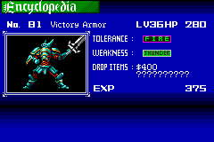
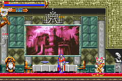

|
Relic
Relics
Relic หมายถึง ของที่ระลึก, ของที่ตกทอด หรือหมายถึง ซากของคนหรือสัตว์ที่ตาย
ซึ่งในเกมจะเป็นคล้ายๆ กับอุปกรณ์เสริม ที่ใส่แล้วเพิ่มความสามารถให้แก่
Juste
Lizard Tail
By pressing DOWN + JUMP, user may SLIDE.
Note : กด "ล่าง" + "กระโดด" จะสามารถ "สไลด์"
ได้
Find: Shrine of the Apostates A
Sylph Feather
While in midair, user may perform an additional JUMP.
Note : ทำให้กระโดดได้ 2 ครั้ง
Find: Skeleton Cave B
Griffin's Wing
By pressing DOWN/UP + JUMP, the user may perform a HIGH JUMP.
Note : สามารถทำ High Jump ได้ โดยการกด "ล่าง" "บน"
+ "กระโดด"
Find: Luminous Cavern A
Soul Orb
Allows user to recognize how much damage an enemy has received.
Note : ทำให้เห็นว่าเมื่อโจมตีศัตรูไป มีความเสียหายเท่าใด
Find: Entrance A
Fairy Journal
Allows user to recognize the names of his enemies.
Note : ทำให้เมื่อโจมตีศัตรูจะเห็นชื่อของศัตรูได้
Find: Marble Corridor A
Monster Tome
Allows user to see the data of monsters he has met.
Note : ทำให้มีคำสั่ง "Encyclopedia"
เพิ่มขึ้นมา เห็นข้อมูลต่างๆ ของศัตรูได้
Find: The Wailing Way A
Eye of Vlad
One of Dracula's bodily remains. Has the power to negate curse.
Note : ป้องกันการติด "คำสาบ"
Find: Chapel of Dissonance A
Heart of Vlad
One of Dracula's bodily remains. Has the power to negate petrification.
Note : ป้องกันการแข็งเป็น "หิน"
Find: Sky Walkway B
Rib of Vlad
One of Dracula's bodily remains. Has the power to negate poison.
Note : ป้องกัน "พิษ"
Find: Entrance B
Nail of Vlad
One of Dracula's bodily remains. Increases STR.
Note : STR +10
Find: Aqueduct of Dragons A
Fang of Vlad
One of Dracula's bodily remains. Increases DEF.
Note : DEF +10
Find: Clock Tower A
Vlad's Ring
One of Dracula's worldly possessions. Increases LCK.
Note : LCK +10
Find: Marble Corridor A
Note : สามารถดูรายละเอียดการเก็บ Relics ทั้งหมดได้จากแผนที่
(* หมายเหตุ แผนที่อ้างอิงไปที่เว็บของ Gamefaqs.com)
SECRET INFO
ในหัวข้อนี้จะมีคำสั่งย่อยอีก 2 คำสั่งคือ
ENCYCLOPEDIA และ COLLECTABLE
Encyclopedia

เมื่อมี Monster Tome จะสามารถเข้ามาดูในหัวข้อนี้ได้
ซึ่งจะมีรายละเอียดต่างๆ ของศัตรูที่ Juste เคยจัดการไปแล้ว
ยกตัวอย่างเช่นหมายเลข 81
ชื่อ - Victory Aromr
Level - 36
HP - 280
ทนทานต่อ - ไฟ
พ่ายแพ้ต่อ - สายฟ้า
เมื่อจัดการได้บางครั้งจะได้รับสิ่งของ ปรกติศัตรูตัวนึงจะให้ item 2 ชนิด
แต่ถ้าหากขึ้นเป็น - - - - - - - คือ จะไม่ให้สิ่งของใดๆ
และหากขึ้นเป็น ? ? ? ? ? ? ? คือ ยังไม่ทราบว่ามันจะให้สิ่งของอะไร
ต้องได้สิ่งของจากศัตรูมาเสียก่อนจึงจะทราบว่าสิ่งที่ได้เป็นอะไร
และสุดท้าย ให้ประสบการณ์ 375
แต่ EXP ที่จะได้รับ จะไม่เท่ากันตลอดไป
ทั้งนี้จะขึ้นอยู่กับ Level ของเรา และ Level ของศัตรู
หาก Level ของ Juste มีมากกว่าศัตรู EXP ที่ได้รับก็จะลดน้อยลงไป
และหาก Level ของ Juste มีมากกว่าศัตรูถึง 10 Level จะได้รับ EXP เพียงตัวละ
1 เท่านั้น
Collectibles
Collectible หมายถึง ซึ่งพอจะรวบรวมได้, ซึ่งพอจะเก็บได้
ในภาคนี้ Juste ได้ไปพบห้องๆ หนึ่ง ซึ่งเขาใช้เป็นที่พัก
แต่ที่พักไหนๆ ก็มีแล้ว ก็เลยต้องตกแต่งเสียหน่อย
ซึ่ง Juste จะสามารถเก็บสะสมสิ่งของต่างๆ มาประดับห้องได้
โดยเมื่อเจอสิ่งของที่สามารถนำมาประดับได้
ก็จะเข้าไปอยู่ในหัวข้อ Collectibles จากนั้นก็นำไปประดับที่ห้อง
(ได้ของแล้วก็นำกลับมาที่ห้อง)

(อืม... ดูดีขึ้นเยอะ)
รายละเอียดทั้งหมดของ Collectibles
Chandelier
Said to have been used by royalty. It has an interesting history.
Find: Castle Treasury A
Tall Clock
Bought the morning your granddad was born. Still keeps perfect time.
Find: Clock Tower B
Bookshelf
A very sturdy bookshelf. And it's earthquake-proof.
Find: Skeleton Cave A
Old radio
Radio prototype received directly from the great inventor himself.
Find: Sky Walkway B
Silver Dishes
This pure silver dinner set radiates elegance.
Find: Luminous Cavern B
Antique Table
Crafted out of a 1000 year old cedar tree.
Find: Clock Tower A
Chair
A wooden chair of excellent workmanship.
Find: Castle Treasury B
Rocking Chair
This relaxing chair offers up gentle creaks as it rocks.
Find: Sky Walkway B
Silk Curtain
Made of the finest silk and milky to the touch.
Find: Room of Illusion B
Ancient Urn
The most valuable objects are those whose value is difficult to guess.
Find: Entrance B
Wizard's Urn
Staring at this urn tends to induce sneezing.
Find: Skeleton Cave B
Pretty Vase
A pretty vase brimming with artificial flowers.
Find: Entrance B
Side Table
Side tables add a nice accent to any room.
Find: Skeleton Cave B
Teacup
With a sip of tea from this cup, you can join our clan.
Find: Castle Treasury A
Teapot
Has the power to make teas taste better than they really are.
Find: Castle Treasury A
Wine Glass
A beautiful wine glass for elegant evenings with friends.
Find: Castle Top Floor B
Hero Statue
A hero immortalized forever. Someday, that will be me...
Find: Chapel of Dissonance B
Smiling Statue
Statue of a goddess. Goddesses are so beautiful, aren't they?
Find: The Wailing Way B
Sage Statue
Statue of a smug-looking old man.
Find: Luminous Cavern B
Raccoon Figure
A superb piece of art by an obviously skilled raccoon figurine craftsman.
Find: Clock Tower B
Lucky Cat
An statue that helps bring in money. Effectiveness unknown.
Find: Clock Tower A
Phonograph
A machine that emits sound. Analog is great, isn't it...
Find: Skeleton Cave A
Stuffed Stag
Symbol of the rich. I feel as I'm being watched.
Find: Skeleton Cave B
Candleholder
A silver candlestick for elegant evenings with friends.
Find: The Wailing Way B
Candlestick
A gold candlestick for elegant evenings with friends.
Find: Castle Top Floor A
Silver Trinket
The inscription reads: "Candlelight makes any cooking look edible".
Find: Sky Walkway A
Gold Trinket
The inscription reads: "Candlelight makes your girlfriend like you
more".
Find: Sky Walkway A
Strange Mirror
Take a peek at it and you feel as if someone were there...
Find: Luminous Cavern B
Castle Drawing
Seems out of place in this castle.
Find: Castle Top Floor A
King-size Bed
Manufactured by the only trusted and true name in beds, "FUTON".
Find: Sky Walkway B
Closet
Ease your worries about having too many clothes, too little space.
Find: Castle Treasury A
Note : สามารถดูรายละเอียดการเก็บ Collectibles ทั้งหมดได้จากแผนที่
(* หมายเหตุ แผนที่อ้างอิงไปที่เว็บของ Gamefaqs.com)
|